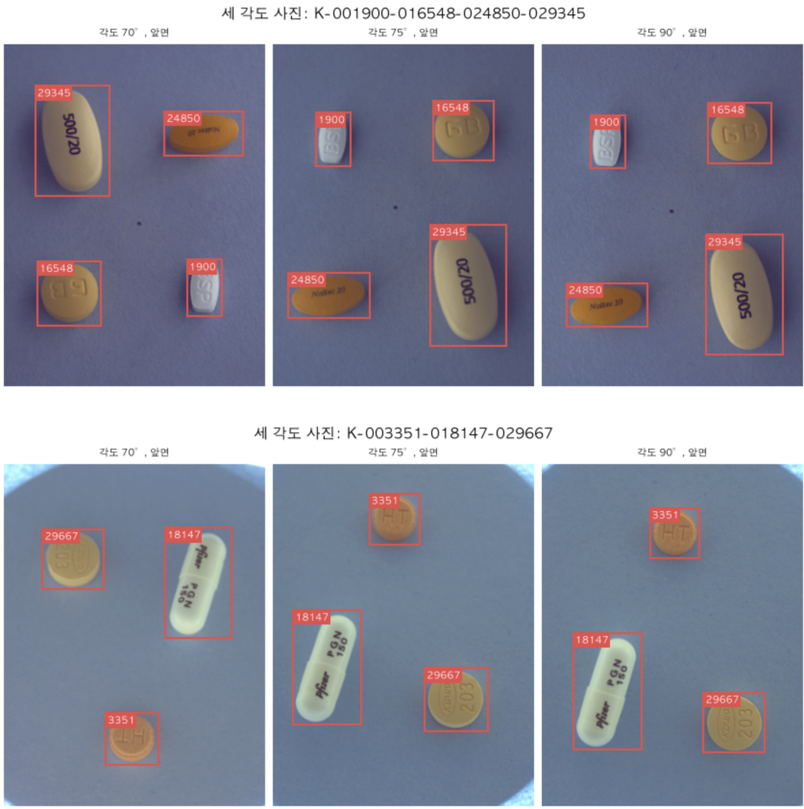

1
/
0
부록
부록: 사진 단위로 나누면 val의 76%가 train과 같은 조합입니다

분할 단위
같은 조합이 train에 있는 val 사진
val에만 있는 클래스
train에만 있는 클래스
사진 단위
평균 76.1% (63~87%)
평균 0.1
평균 11.5
조합 단위
0%
평균 4.1
평균 24.8
최종 분할은 조합 단위, seed 410입니다. train 185장 / val 47장, val 30종.
▦
← →/Space 이동 · N 노트 · Esc 목차
SPEAKER NOTES